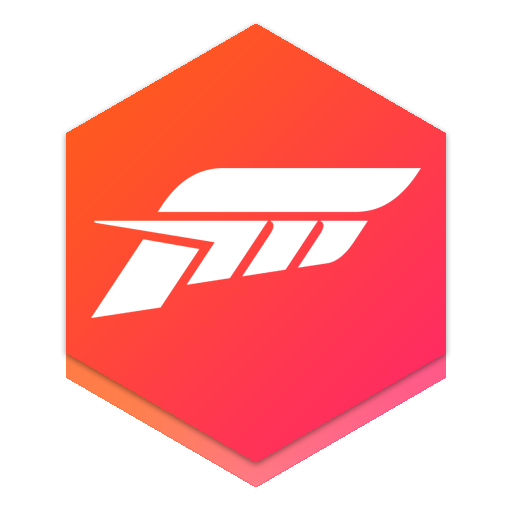

 Forza Horizon 4
Details
 |
|
| Playtime | 3d 12h 22m 0s |
| Last Activity | 5/18/2021 21:03:41 |
| Added | 4/24/2025 1:30:35 |
| Modified | 5/1/2025 23:21:21 |
| Completion Status | Played |
| Library | Xbox |
| Source | Xbox |
| Platform | $PC (Windows) Microsoft Xbox Series X |
| Release Date | 10/2/2018 |
| Community Score | 96 |
| Critic Score | 92 |
| User Score | |
| Genre | Racing |
| Developer | Playground Games Sumo Digital Turn 10 Studios |
| Publisher | Microsoft Studios |
| Feature | Cloud Saves Controller Support Full Controller Support HDR Multiplayer Single Player Xbox Play Anywhere |
| Links | PCGamingWiki Official site HowLongToBeat IGDB SteamDB StrategyWiki MobyGames Wikipedia WSGF |
| Tag | Action Adventure Arcade Atmospheric Automobile Sim Controller Driving Exploration First-Person Funny Great Soundtrack Multiplayer Online Co-Op Open World PvP Racing Realistic Simulation Singleplayer Sports |
Description
Forza Horizon 4 is a 2018 racing video game developed by Playground Games and published by Microsoft Studios. It was released on 2 October 2018 for Windows and Xbox One after being announced at Xbox's E3 2018 conference. An enhanced version of the game was released on Xbox Series X/S on 10 November 2020. The game is set in a fictionalised representation of areas of Great Britain. It is the fourth Forza Horizon title and eleventh instalment in the Forza series. The game is noted for its introduction of changing seasons to the series, as well as featuring several content-expanding updates which have included new game modes. A sequel, Forza Horizon 5, was released on 9 November 2021. The game was delisted from sale on 15 December 2024 across all platforms.
Gameplay
Forza Horizon 4 is a racing video game set in an open world environment based in a fictionalised Great Britain, with regions that include condensed representations of Edinburgh, the Scottish Highlands, the Lake District (including Derwentwater), Ambleside and the Cotswolds (including Broadway), Bamburgh among others. The game features a route creator which enables players to create races using completely customised routes. The game takes place in a synchronised shared world, compared to the AI-driven 'drivatars' from its predecessors, with each server supporting up to 72 players. The game is also playable in offline mode.
The game features a dynamic weather system that also depicts the change of seasons. The environment in the world will change depending on the season: for example, Derwentwater would freeze over in winter and allow players the ability to drive on the ice to reach areas of the game world that would be inaccessible during all the other seasons. The seasons are fixed across the game's servers, meaning that all players will experience the same conditions at the same time. After completing a prologue series of events which introduce players to all four seasons, the shared-world seasons will change every week, with the changes happening on Thursdays at 2:30 pm GMT. The season changes are forewarned to players in the game with a countdown clock, which, when finished, will trigger a short cinematic cutscene showing the previous season changing to the new one, although the cinematic will be delayed for players who are in the middle of an event or activity.
The game features over 750 licensed cars from car brands. Players have the opportunity to buy in-game houses which unlock new items, cars and game-play perks, including Horizon Promo and the ability to fast travel anywhere on the map.
Returning from Forza Horizon 3, Wheelspins are prize spins with random rewards ranging from cars, Credits (in-game currency), emotes, horns, and clothing. Wheelspins are rewarded from progressing through the story and completing certain seasonal challenges. These can also be bought in the #Forzathon shop. Super Wheelspins, enhanced versions of Wheelspins with better prizes, are also given for completing parts of the story and seasonal challenges. Super Wheelspins can also be bought in the #Forzathon Shop. Also returning from the past two games, British drum & bass label Hospital Records provided a soundtrack composed of 20 original tracks from various label artists, as well as an unreleased track by Fred V & Grafix titled "Sunrise", made for the game's opening cinematic. The soundtrack album was released on 26 October 2018.
The game features a Dolby Atmos soundtrack.
Owing to licensing issues, vehicles from Mitsubishi Motors and Toyota (including Lexus marque with the exception of some offroad racing and pre-customised trucks and Subaru BRZ) were not present in the base game, but updates released in 2019 re-introduced these brands; Mitsubishi returned on 15 January 2019 with the release of the Free Mitsubishi Motors Car Pack DLC. That same day, however, two dancing emotes ("Carlton" and "Floss") were removed from the game due to lawsuits filed by those dances' creators against Epic Games for their use of the dances as emotes in their game Fortnite Battle Royale. On 19 November 2019, the official Forza Motorsport Twitter account announced that Toyota vehicles would be returning to the Forza series in the Series 17 update of Forza Horizon 4 on 12 December with the release of the 1998 Toyota Supra RZ.
Content and gameplay updates
Forza Horizon 4 has seen several content expansions and updates since its release. There are two downloadable content expansions for the game. The first of these, Fortune Island, was released in December 2018.[citation needed] It includes a new map, a range of additional cars and adds extreme weather conditions to the game, along with a treasure hunting campaign in which players find treasure chests to earn up to ten million Credits. The second, Lego Speed Champions, was announced at E3 2019 and released on 13 June 2019. Similar to the Forza Horizon 3: Hot Wheels expansion, it is based on the Lego brand's Lego Speed Champions toyline featuring Lego toy versions of real cars, a map "built" with various Lego pieces, and its own separate campaign. It also added a new in-game radio station, Radio Awesome, which is dedicated solely to playing The Lego Movie theme song "Everything Is Awesome" by Tegan and Sara featuring The Lonely Island.
The Series 5 update in January introduced the Free DLC Mitsubishi Motors Car Pack. It included 7 new cars and added a new 10-mission campaign called Isha's Taxis. Four additional car packs have also been released as of 22 February 2021, one including cars from the James Bond films, the other being a collection of Formula Drift cars and a pack of cars from the Barrett-Jackson Car Pack from Forza Motorsport 7. Another car pack featuring Hot Wheels cars was released on 22 February 2021. There was also a Car Pass featuring 42 new cars. Along with that, there was also the Welcome Pack which featured cars that were pre-tuned and a free player house. There is also a high performance car pack and an all-terrain car pack. Every four weeks, at the end of every Spring season, a new update for the game was released introducing new gameplay content, cars, and cosmetic items. The first of these updates, at the end of October 2018, saw the addition of the Route Creator tool and a new Horizon Story, British Racing Green. The Series 7 update in March 2019 introduced the Festival Playlist. Players complete daily, weekly, and monthly challenges, including, but not limited to, Seasonal Championships, Playground Games, Ranked Adventure, and Seasonal PR Stunts. While completing these tasks alone earns players rewards, they also contribute to weekly and monthly rewards. 50% and 80% completion of both the Series and the current season rewards drivers with an exclusive car or cosmetic item, consisting of the Common, Rare, Epic, or Legendary rarity. The Festival Playlist has continued to be a part of each series since its introduction.
With the Series 9 update in May 2019, the developers implemented a system to prevent wallriding—the practice of driving into a curved wall on the outside of a corner instead of braking and steering, thus allowing the player to carry more speed through a corner—and high-speed collisions in online multiplayer. The system predicts the occurrence of a collision between two cars with a large difference in speed and ghosts the faster vehicle, preventing rammings (both intentional and accidental). The anti-wall riding measures include slowing down a car in contact with the wall for an extended period of time, depending on speed and the predicted distance the player would have travelled if they did not hit the wall.
In July 2019, as part of the Series 11 update, a special Horizon Story was added in collaboration with BBC's Top Gear. The missions, narrated by presenter Chris Harris, provided players with rewards including the "Track-tor" (a race-modified tractor featured in Series 25 of the show) and the Mercedes-Benz G63 AMG 6x6. The update also saw the return of class-based Rivals modes from previous games in the series, and the ability to track progress in the Horizon Life menu, as well as several new unlockable cars in the game's Festival Playlist feature.
In December 2019, as part of the Series 17 update, a new 72-player battle royale-style mode called The Eliminator was added. In this mode, players start by driving around the game world in a fairly slow, weak car such as a 1965 Mini Cooper. As players roam the safe zone, they can acquire car drops that contain more powerful vehicles that randomly appear on the map. Players can also challenge other players to head-to-head races to specific points on the map by pointing their camera at the other's vehicle and honking their horn. Players are eliminated from the event if they drive out of the safe zone (which shrinks over time like in other battle royale games) or lose a head-to-head race, where the winner of such has the option to drive the opponent's car or receive an upgrade. Eventually, when the safe zone shrinks to a certain point, the remaining players will then race to one final point on the map to determine the winner. Microsoft stated in 2021 that The Eliminator was the most popular multiplayer mode in the game.
In April 2020, as part of the Series 21 update, Horizon Promo, a feature previously found in Forza Horizon 2 and 3 where players take in-game photographs of cars using Photo Mode for rewards, made its return to the Forza Horizon series in Horizon 4. In July 2020, the Series 24 update brought a new Photo Challenge feature in the Festival Playlist. This feature would reward players if they took a photo of the specified car in front of the specified location as set out by the Photo Challenge for that week. In July 2020, it was announced that Forza Horizon 4 would be one of a suite of games published by Xbox Game Studios to receive an upgraded version for Xbox Series X/S through Microsoft's Smart Delivery system, which will make the game playable on the new console in 4K resolution at 60 fps.
In December 2020, as part of the Series 30 update, another new game mode called Super7 was added to the game, which came alongside the expanded "Blueprint Builder" feature. In Super7, players have to complete a series of seven randomly selected stunt challenges for rewards. The Blueprint Builder expands upon the Forza Blueprint feature by allowing players to set up ramps, structures and scenery à la TrackMania series to create their own challenges and share them with the game's online community. In the following days, a fictional car, known as the 2058 Quadra V-Tech, was included in the game as part of the release of Cyberpunk 2077.
On 9 March 2021, the game was released on Steam, which suffered from various gameplay issues and game crashes, as well as the inability to import Microsoft Store savegames. On 14 April 2021, the Steam version received a patch, which contained "various stability improvements", according to the patch notes. In July 2021, as part of the Series 37 update, a more difficult variant of the Super7 game mode, called Super7 High Stakes was released, which uses the same gameplay mechanics as the standard Super7, but with a "High Stakes" concept. After completing a challenge, the player has two options: Stick, which lets the player claim their previously earned reward(s) and which also restarts the game, or Twist, which piles up the rewards. The player has three attempts to complete every challenge and the opportunity to pick a new challenge three times per game. If the player loses three times, all previously earned rewards will be lost and the game will now start from the beginning. It is also the last major content update for Forza Horizon 4, featuring only one new car, the VUHL 05RR, which is a nod to the Mexican location in Forza Horizon 5.
On 25 June 2024, all available downloadable content was removed from the Microsoft Store and Steam in advance of its impending removal and delisting from both stores on 15 December. Playground Games cited "licensing and agreements with our partners" as the reasoning behind the game's removal from online stores.
Reception
Forza Horizon 4 received "universal acclaim" for the Xbox One version, while the PC version received "generally favorable" reviews, according to review aggregator Metacritic. The Xbox One version is the highest rated Forza Horizon title and is tied with Forza Motorsport and Forza Motorsport 3 as the highest rated entry in the Forza series based on Metacritic scores.
Game Informer praised the changing weather, feeling it added more variety to each race, "The weather greatly impacts the way you race, and sometimes forces you to retreat to your garage to bring out rides that are more suitable for the conditions. VG247 liked the variety of challenges and activities available to the player, writing, "There are so many different events, and so much to do and find, but it never feels daunting unless you want to nail every weekly challenge and goal". While criticising the festival system as confusing, The Guardian enjoyed the different feel of the game's cars, "Playground Games’ attention to car-modelling detail means that a garage full of 50 vehicles offers 50 slightly different experiences, and lets you develop a curated collection of favourites". Polygon criticised how the game world felt like a theme-park version of England, "everything has the faint whiff of an idealised 1950s about it, a place of ordered pub gardens and rosebushes. There’s no graffiti, no council estates, no industry, no suburbs".
GamesRadar+ felt the setting of Britain wasn't as interesting as 3's Australia, but liked the online modes, saying "messing around with a group of mates was always fun in Burnout Paradise, and Forza Horizon 4 gives you everything you need to do that, if it’s your bag". GameSpot praised the new additions Forza Horizon 4 added, "You're also now able to create your own custom courses, and the series' more creative pursuits return with story missions--which feature things like stunt driving and nice homages to other racing games". Destructoid had mixed feelings on winter, saying it was "the only season that feels truly unique and actually affects the way driving works", but could be "less fun for the players who don’t want to slip and slide without much traction".
On 18 January 2019, Playground Games announced that they had reached 7 million registered users after the launch of Fortune Island expansion. In June 2019, prior to the launch of the Lego Speed Champions expansion, Playground Games announced the game had reached 10 million users. In August 2019 it was then announced that the game had now topped the 12 million player milestone. By November 2020, Microsoft reported that the game had been played by 24 million players since launch.